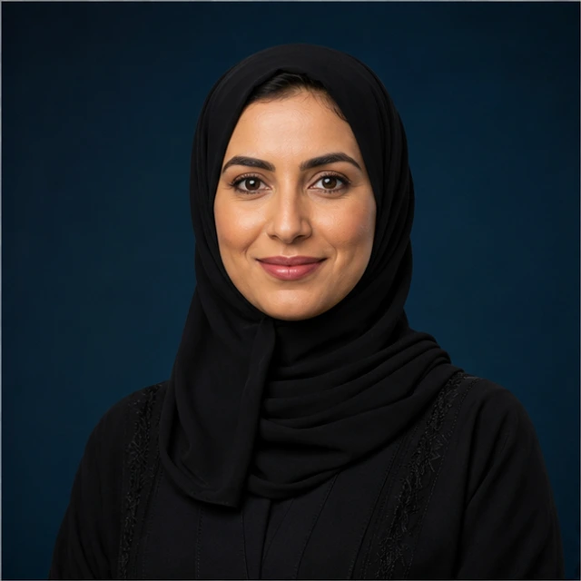

Riyadh welcomes the world to build more inclusive and trusted data ecosystems, turning knowledge into decisions that advance sustainable development.
Official forum venue
Riyadh, Kingdom of Saudi Arabia9–12 November 2026

We will notify you when official registration opens.
Thank you. We will contact you when registration opens.